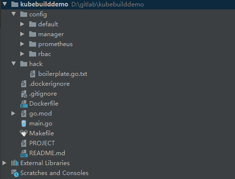
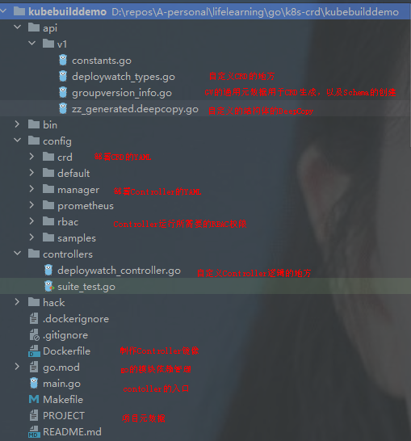

Kubebuilder
一个使用 CRDs（Custom Resource Definition） 构建 K8s API 的 SDK，主要是：
- 提供脚手架工具初始化 CRDs 工程，自动生成 boilerplate 代码和配置；
- 提供代码库封装底层的 K8s go-client；
方便用户从零开始开发 CRDs，Controllers 和 Admission Webhooks 来扩展 K8s。
kubebuilder、operator-sdk 这些框架其实都是在 controller-runtime 基础上做了一层封装，方便开发者快速生成项目的脚手架，从零开始开发 CRDs，Controllers 和 Admission Webhooks 来扩展 K8s。
架构
GVKs&GVRs
GVK = GroupVersionKind，GVR = GroupVersionResource。
API Group & Versions（GV）
API Group 是相关 API 功能的集合，每个 Group 拥有一或多个 Versions，用于接口的演进。
Kinds & Resources
每个 GV 都包含多个 API 类型，称为 Kinds，在不同的 Versions 之间同一个 Kind 定义可能不同， Resource 是 Kind 的对象标识（resource type）：
- 一般来说 Kinds 和 Resources 是 1:1 的，比如 pods Resource 对应 Pod Kind；
- 有时候相同的 Kind 可能对应多个 Resources，比如 Scale Kind 可能对应很多 Resources：deployments/scale，replicasets/scale；
- 对于 CRD 来说，只会是 1:1 的关系；
每一个 GVK 都关联着一个 package 中给定的 root Go type，比如 apps/v1/Deployment 就关联着 K8s 源码里面 k8s.io/api/apps/v1 package 中的 Deployment struct，我们提交的各类资源定义 YAML 文件都需要写：
- apiVersion：这个就是 GV 。
- kind：这个就是 K。
使用
[Tutorial: Building CronJob](https://book.kubebuilder.io/cronjob-tutorial/cronjob-tutorial.html)
安装
安装 kubebuilder 和它依赖的 kustomize
# download kubebuilder and install locally.
curl -L -o kubebuilder https://go.kubebuilder.io/dl/latest/$(go env GOOS)/$(go env GOARCH)
chmod +x kubebuilder && mv kubebuilder /usr/local/bin/
创建工程
创建了一个 Go module 工程，引入了必要的依赖，创建了一些模板文件
# create a project directory, and then run the init command.
mkdir project
cd project
# we'll use a domain of test.kubebuild.xliu,
# so all API groups will be <group>.test.kubebuild.xliu.
# project's name defaults to that of your current working directory
kubebuilder init --domain test.kubebuild.xliu --repo test.kubebuild.xliu/kubebuilddemo
形成的结构如下所示：
go.mod：项目的go 模块信息，包含基本的依赖信息Makefile：编译和部署controller的make 信息；PROJECT：用于搭建新组件的Kubebuilder元数据

main.go：注册controller的代码
创建API
创建了对应的 CRD 和 Controller 模板文件
group：组织，会配合domain使用，如batch.test.kubebuild.xliu；version：版本号；kind类型有：资源类型
创建好的目录组织如下：
api/v1：cron_types.go：自定义CRD的地方；groupversion_info.go：GV通用数据生成CRD，以及Schema的创建；zz_generated.deeocopy.go：包含代码生成的runtime.Object接口实现，DeepCopy是核心；controller：cronjob_controller.go：自定义controller逻辑的地方；
下图是个示例：

自定义CRD字段
在中对应的文件定义 Spec 和 Status，在api/v1/**_types.go中，
DeployWatch：根类型，描述CronJob类型，不需要改变；TypeMeta：API version 和 Kind；ObjectMeta：name、namespace、labels 等；DeployWatchSpec：spec，需要对应的 json 描述，需要对应补充字段；DeployWatchSpecStatus：状态信息，需要对应补充字段；DeployWatchList：CRD集合，用于类似LIST的操作，不需要改变；
// DeployWatchSpec defines the desired state of CronJob
type DeployWatchSpec struct {
// INSERT ADDITIONAL SPEC FIELDS - desired state of cluster
// Important: Run "make" to regenerate code after modifying this file
// Repo is the git repo url
Repo string `json:"repo"`
// Path is the k8s yaml file path, support directory
Path string `json:"path"`
// User the user can access the repo
User string `json:"user,omitempty"`
// Secret the secret for use to access the repo
Secret string `json:"secret,omitempty"`
}
// DeployWatchStatus defines the observed state of DeployWatch
type DeployWatchStatus struct {
// INSERT ADDITIONAL STATUS FIELD - define observed state of cluster
// Important: Run "make" to regenerate code after modifying this file
LastUpdateTime string `json:"LastUpdateTime,omitempty"`
Conditions []Condition `json:"conditions"`
Phase Phase `json:"phase"`
}
//+kubebuilder:object:root=true
//+kubebuilder:subresource:status
// DeployWatch is the Schema for the deploywatches API
type DeployWatch struct {
metav1.TypeMeta `json:",inline"`
metav1.ObjectMeta `json:"metadata,omitempty"`
Spec DeployWatchSpec `json:"spec,omitempty"`
Status DeployWatchStatus `json:"status,omitempty"`
}
//+kubebuilder:object:root=true
//+kubebuilder:object:root=true
// DeployWatchList contains a list of DeployWatch
type DeployWatchList struct {
metav1.TypeMeta `json:",inline"`
metav1.ListMeta `json:"metadata,omitempty"`
Items []DeployWatch `json:"items"`
}
kubebuilder 使用特定注释来生成并编译代码，有些类似于 Spring 中的注解。例如kubebuilder:object:root=true表示生成此对象的api。
完善 controller 逻辑
kubebuilder 依赖于 controller-runtime 实现 controller 整个处理流程
在controllers/**_controller.go中，有函数
//+kubebuilder:rbac:groups=batch.test.kubebuild.xliu,resources=cronjobs,verbs=get;list;watch;create;update;patch;delete
//+kubebuilder:rbac:groups=batch.test.kubebuild.xliu,resources=cronjobs/status,verbs=get;update;patch
//+kubebuilder:rbac:groups=batch.test.kubebuild.xliu,resources=cronjobs/finalizers,verbs=update
func (r *CronJobReconciler) Reconcile(ctx context.Context, req ctrl.Request) (ctrl.Result, error) {
// context is used to allow cancelation of requests, and potentially things like tracing
_ = log.FromContext(ctx)
// TODO(user): your logic here
// successfully reconciled this object and don’t need to try again until there’s some changes.
return ctrl.Result{}, nil
}
这就是控制器的处理函数，每当集群中有Sample资源的变动（CRUD），都会触发这个函数进行协调。方法上面的注解表明了controller rbac所需要的权限。
比如我们在Reconcile中获取进入协调的Sample对象，检查它的status.phase是否为Pending，如果是，就根据字段创建对应的 deployment。
Admission Webhooks
对CRD实现管理接口：
- Mutating Admission Webhook
- Validating Admission Webhook:
kubebuilder create webhook --group gitop --version v1 --kind DeployWatch --defaulting --programmatic-validation
api/v1/**_webhook.go：定义webhook；main.go：注册webhook manager；
实现以下函数
//+kubebuilder:webhook:path=/mutate-batch-tutorial-kubebuilder-io-v1-cronjob,mutating=true,failurePolicy=fail,groups=batch.tutorial.kubebuilder.io,resources=cronjobs,verbs=create;update,versions=v1,name=mcronjob.kb.io,sideEffects=None,admissionReviewVersions=v1
// Default implements webhook.Defaulter so a webhook will be registered for the type
func (r *DeployWatch) Default() {
deploywatchlog.Info("default", "name", r.Name)
// TODO(user): set defaults to our CRD
}
//+kubebuilder:webhook:verbs=create;update;delete,path=/validate-batch-tutorial-kubebuilder-io-v1-cronjob,mutating=false,failurePolicy=fail,groups=batch.tutorial.kubebuilder.io,resources=cronjobs,versions=v1,name=vcronjob.kb.io,sideEffects=None,admissionReviewVersions=v1
// ValidateCreate implements webhook.Validator so a webhook will be registered for the type
func (r *DeployWatch) ValidateCreate() error {
deploywatchlog.Info("validate create", "name", r.Name)
// TODO(user): fill in your validation logic upon object creation.
return nil
}
// ValidateUpdate implements webhook.Validator so a webhook will be registered for the type
func (r *DeployWatch) ValidateUpdate(old runtime.Object) error {
deploywatchlog.Info("validate update", "name", r.Name)
// TODO(user): fill in your validation logic upon object update.
return nil
}
// ValidateDelete implements webhook.Validator so a webhook will be registered for the type
func (r *DeployWatch) ValidateDelete() error {
deploywatchlog.Info("validate delete", "name", r.Name)
// TODO(user): fill in your validation logic upon object deletion.
return nil
}
测试
envtest：https://github.com/kubernetes-sigs/controller-runtime/tree/master/pkg/envtest
controllers/suite_test.go：测试controller
- 使用
envtest创建本地的k8s API server，实例化和创建定义的controller；
export K8S_VERSION=1.21.2
curl -sSLo envtest-bins.tar.gz "https://go.kubebuilder.io/test-tools/${K8S_VERSION}/$(go env GOOS)/$(go env GOARCH)"
mkdir /usr/local/kubebuilder
tar -C /usr/local/kubebuilder --strip-components=1 -zvxf envtest-bins.tar.gz
部署
安装CRDs：
- 在项目主目录下执行
make install，会自动调用kustomize创建部署 crd 的yml，我们也可以从config/crd/bases/下找到对应的 crd yaml文件。
本机集群
本地启动 controller 主程序：
make run ENABLE_WEBHOOKS=false
通过kubectl部署cronjob，以config/samples/batch_v1_cronjob.yaml为例
kubectl create -f config/samples/batch_v1_cronjob.yaml
apiVersion: batch.test.kubebuild.xliu/v1
kind: CronJob
metadata:
name: cronjob-sample
spec:
schedule: "*/1 * * * *"
startingDeadlineSeconds: 60
concurrencyPolicy: Allow # explicitly specify, but Allow is also default.
jobTemplate:
spec:
template:
spec:
containers:
- name: hello
image: busybox
args:
- /bin/sh
- -c
- date; echo Hello from the Kubernetes cluster
restartPolicy: OnFailure
远程集群
当我们想以deployment方式部署controller时，可以使用 Dockerfile 构建镜像，使用config/manager/manager.yml 部署。
make docker-build docker-push IMG=<some-registry>/<project-name>:tag
make deploy IMG=<some-registry>/<project-name>:tag
Webhook（TODO）
实践源码（TODO）
参考 fluid
- 可以将 webhook 跟 crd controller 分成两个镜像，提供不同的入口和处理；
- 针对 webhook 可以实现自定义注册 Handler 的方式；
进阶
Status().Update()
在 Kubebuilder 自动生成的CR结构体中，已经为我们生成了 Status 的结构体，但此时 Status 仍非 CR 的子资源。
默认创建的SampleSpec 和 SampleStatus 都是 Sample 的成员变量，Status并不像Pod.Status一样，是Pod的subResource。
因此，如果我们在controller的代码中调用到Status().Update(), 会触发panic，并报错：the server could not find the requested resource
如果我们想像k8s中的设计那样，那么就要遵循k8s中status subresource的使用规范：
- 用户只能指定一个CRD实例的spec部分；
- CRD实例的status部分由控制器进行变更。
此时我们需要在 Sample 中添加一行注解// +kubebuilder:subresource:status，标明 status 是 Sample 的子资源。
EventRecorder
Status 字段用于 CR 的逻辑处理，但在后期维护过程中，则一部分会依赖于 CR 所产生的 Event，这有些类似于在 CR 的业务逻辑中添加部分重要的日志，最终可以帮助我们定位问题。后期运行过程中，可以通过 kubectl describe cr -n xxx 看到这些 Event。
在 SampleReconciler 中加入 recorder.EventRecorder 成员变量:
type SampleReconciler struct {
client.Client
Log logr.Logger
Scheme *runtime.Scheme
Recorder record.EventRecorder
}
// 在业务逻辑中记录
func (r *SampleReconciler) Reconcile(req ctrl.Request) (ctrl.Result, error) {
sample := &samplev1.Sample{}
_ := r.Get(ctx, client.ObjectKey{Name: req.Name, Namespace: req.Namespace}, sample)
// do something
r.Recorder.Eventf(sample, corev1.EventTypeWarning, "Error", "some error")
}
K8s 为我们提供了2种等级的 event，分别是 Normal 和 Warning。
Finalizer
由于这个Object可能创建一些其他的resource(比如pod)，在删除之前，需要做一些清理工作, finalizer就是实现这个清理的framework代码。
finalizer即终结器，存在于每一个k8s内的资源实例中，即**.metadata.finalizers,它是一个字符串数组，每一个成员表示一个finalizer。
控制器在删除某个资源时，K8s 会更新 CR 的 DeletionTimestamp 字段，这样会触发一个 Update 动作，我们的 controller 可以监听这个字段的变更，实现 CR 的预删除处理，比如删除由 CR 创建的某些资源。
当我们需要设计这类finalizer时，就可以自定义一个controller来实现。
func (c *SampleReconciler) finalize(ctx context.Context, sample *samplev1.Sample) error {
logs := c.getLog(sample)
// 这里我们自定义一个 finalizer 字段
myFinalizerName := "sample.finalizers.io"
if sample.ObjectMeta.DeletionTimestamp.IsZero() {
//这里由于 DeletionTimestamp 是0，即没有删除操作，则不进行处理，只检查 CR 中是否含有自定义 finalizer 字符，若没有则增加。
if !containsString(sample.ObjectMeta.Finalizers, myFinalizerName) {
sample.ObjectMeta.Finalizers = append(sample.ObjectMeta.Finalizers, myFinalizerName)
}
} else {
//进行预删除操作
if containsString(sample.ObjectMeta.Finalizers, myFinalizerName) {
// do something
// 从 CR 中删除自定义 finalizer 字段。
sample.ObjectMeta.Finalizers = removeString(sample.ObjectMeta.Finalizers, myFinalizerName)
}
return nil
}
return nil
}
索引
client-go支持构建带索引的缓存，并且允许用户自定义索引函数的名称和内容。当缓存的数据带有索引时，我们可以更快地通过索引List到想要的数据，既可以提高性能又可以减少代码量。
kubebuilder 2.0 提供了很简单的索引构建方式。比如我们要以pod中的spec.NodeName为索引， 方便我们快速List查询某个节点上的pod：
// 要先构建好manager
mgr.GetFieldIndexer().IndexField(context.Background(), &v1.Pod{}, "indexNodeNameOfPod", func(o runtime.Object) []string {
v := o.(*v1.Pod).Spec.NodeName
return []string{v}
})
...
// 使用 manager的client进行List，或者 Reconciler的 List 方法
podList := &v1.PodList{}
err := mgr.GetClient().List(context.TODO(), podList, &client.MatchingFields{"indexNodeNameOfPod": node.Name})
扩展 Reconciler（TODO）
假设现在已经监听到 CR 的变化事件（包括 创建、更新、删除、扩展），这个事件则会进入 WorkQueue 中。
在进入 WorkQueue 之前， controller-runtime 会进行一些过滤处理和业务处理。主要涉及接口是 EventHandler 和 Predicate。
其中 EventHandler 可以在事件入队列之前加入其他逻辑，其定义如下：
//controller-runtime@v0.5.0\pkg\handler\eventhandler.go
//此处定义了针对不同事件的处理接口，我们可以通过实现此接口完成扩展业务逻辑
type EventHandler interface {
// Create is called in response to an create event - e.g. Pod Creation.
Create(event.CreateEvent, workqueue.RateLimitingInterface)
// Update is called in response to an update event - e.g. Pod Updated.
Update(event.UpdateEvent, workqueue.RateLimitingInterface)
// Delete is called in response to a delete event - e.g. Pod Deleted.
Delete(event.DeleteEvent, workqueue.RateLimitingInterface)
// Generic is called in response to an event of an unknown type or a synthetic event triggered as a cron or
// external trigger request - e.g. reconcile Autoscaling, or a Webhook.
Generic(event.GenericEvent, workqueue.RateLimitingInterface)
}
Predicate 则是对监听到的事件进行过滤，让我们只关注我们想要的时间，其结构体如下：
type Predicate interface {
// Create returns true if the Create event should be processed
Create(event.CreateEvent) bool
// Delete returns true if the Delete event should be processed
Delete(event.DeleteEvent) bool
// Update returns true if the Update event should be processed
Update(event.UpdateEvent) bool
// Generic returns true if the Generic event should be processed
Generic(event.GenericEvent) bool
}
在入队列之前，controller-runtime 的处理逻辑如下：
//controller-runtime@v0.5.0\pkg\source\internal\eventsource.go
type EventHandler struct {
EventHandler handler.EventHandler
Queue workqueue.RateLimitingInterface
Predicates []predicate.Predicate
}
func (e EventHandler) OnAdd(obj interface{}) {
c := event.CreateEvent{}
...
// 这里可以自定义 Predicates，将事件进行过滤
for _, p := range e.Predicates {
if !p.Create(c) {
return
}
}
// 调用了上面的 EventHandler 对应的逻辑
e.EventHandler.Create(c, e.Queue)
}
// 除了 OnAdd 外，还有 OnUpdate OnDelete
注意，最终入队列的数据结构如下，即只有 namespace 和name，并没有资源的类型。
在 controller-runtime 包中的 controller.Start()方法中，则会循环从队列中拿取一个事件
// controller.go
func (c *Controller) Start(stop <-chan struct{}) error {
...
// 启动多个 worker 线程，处理事件
log.Info("Starting workers", "controller", c.Name, "worker count", c.MaxConcurrentReconciles)
for i := 0; i < c.MaxConcurrentReconciles; i++ {
go wait.Until(c.worker, c.JitterPeriod, stop)
}
...
}
func (c *Controller) worker() {
for c.processNextWorkItem() {
}
}
func (c *Controller) processNextWorkItem() bool {
// 拿取一个事件
obj, shutdown := c.Queue.Get()
if shutdown {
// Stop working
return false
}
// We call Done here so the workqueue knows we have finished
// processing this item. We also must remember to call Forget if we
// do not want this work item being re-queued. For example, we do
// not call Forget if a transient error occurs, instead the item is
// put back on the workqueue and attempted again after a back-off
// period.
defer c.Queue.Done(obj)
//处理事件
return c.reconcileHandler(obj)
}
监控资源变化
Operator管理的资源
开发时，可能会遇到 CR -> Deployment -> Pod 的逻辑，即由CR 创建deployment，最终落入pod。这时，我们不仅需要监听 CR 的变化， deployment 以及 pod 的变化我们也需要关注，这就意味着我们在 reconciler 中也需要根据deployment变化进行相应的处理。
关注由 CR 创建的 Deployment 采用 Owns() 方法。
// our app will need to be able to use all verbs on a deployment as well as “get” it’s status.
//+kubebuilder:rbac:groups=apps,resources=deployments,verbs=get;list;watch;create;update;patch;delete
//+kubebuilder:rbac:groups=apps,resources=deployments/status,verbs=get
func (r *SimpleDeploymentReconciler) Reconcile(ctx context.Context, req ctrl.Request) (ctrl.Result, error) {
// 创建 Deployment，设置其相关参数如副本数
}
func (r *SimpleDeploymentReconciler) SetupWithManager(mgr ctrl.Manager) error {
return ctrl.NewControllerManagedBy(mgr).
For(&samplev1.SimpleDeployment{}).
// 这样在监听时，只会监听到带有 OwnerShip 的 deployment。
Owns(&apps.Deployment{}).
Complete(r)
当我们使用 CR 创建 deployment 时，可以塞入一个从属关系，类似于 Pod 资源的Metadata 里会有一个OnwerReference字段，会接收到变更通知
// This will allow for the SimpleDeployment to be reconciled when changes to the Deployment are noticed.
_ = controllerutil.SetControllerReference(sample, &deployment, r.Scheme)
外部管理的资源
许多资源规范示例允许用户引用外部资源，如，
- Ingress 引用了 Service 对象
- Pod 有对 ConfigMap、Secrets 和 Volumes 的引用
可以调用Watch()实现监听 configmap：
- A Kind (i.e.
ConfigMap) - A mapping function that converts a
ConfigMapobject to a list of reconcile requests - A list of options for watching the
ConfigMaps
import {
"context"
"github.com/go-logr/logr"
kapps "k8s.io/api/apps/v1"
corev1 "k8s.io/api/core/v1"
"k8s.io/apimachinery/pkg/fields" // Required for Watching
"k8s.io/apimachinery/pkg/runtime"
"k8s.io/apimachinery/pkg/types" // Required for Watching
ctrl "sigs.k8s.io/controller-runtime"
"sigs.k8s.io/controller-runtime/pkg/builder" // Required for Watching
"sigs.k8s.io/controller-runtime/pkg/client"
"sigs.k8s.io/controller-runtime/pkg/handler" // Required for Watching
"sigs.k8s.io/controller-runtime/pkg/predicate" // Required for Watching
"sigs.k8s.io/controller-runtime/pkg/reconcile" // Required for Watching
"sigs.k8s.io/controller-runtime/pkg/source" // Required for Watching
appsv1 "tutorial.kubebuilder.io/project/api/v1"
}
const (
configMapField = ".spec.configMap"
)
//+kubebuilder:rbac:groups=apps,resources=deployments,verbs=get;list;watch;create;update;patch;delete
//+kubebuilder:rbac:groups=apps,resources=deployments/status,verbs=get
//+kubebuilder:rbac:groups="",resources=configmaps,verbs=get;list;watch
func (r *ConfigDeploymentReconciler) Reconcile(ctx context.Context, req ctrl.Request) (ctrl.Result, error) {
var configDeployment appsv1.ConfigDeployment
if err := r.Get(ctx, req.NamespacedName, &configDeployment); err != nil {
log.Error(err, "unable to fetch ConfigDeployment")
// we'll ignore not-found errors, since they can't be fixed by an immediate
// requeue (we'll need to wait for a new notification), and we can get them
// on deleted requests.
return ctrl.Result{}, client.IgnoreNotFound(err)
}
// your logic here
var configMapVersion string
if configDeployment.Spec.ConfigMap != "" {
configMapName := configDeployment.Spec.ConfigMap
foundConfigMap := &corev1.ConfigMap{}
err := r.Get(ctx, types.NamespacedName{Name: configMapName, Namespace: configDeployment.Namespace}, foundConfigMap)
if err != nil {
// If a configMap name is provided, then it must exist
// You will likely want to create an Event for the user to understand why their reconcile is failing.
return ctrl.Result{}, err
}
// Hash the data in some way, or just use the version of the Object
configMapVersion = foundConfigMap.ResourceVersion
}
// Logic here to add the configMapVersion as an annotation on your Deployment Pods.
return ctrl.Result{}, nil
}
func (r *ConfigDeploymentReconciler) SetupWithManager(mgr ctrl.Manager) error {
// The configMap field must be indexed by the manager, so that we will be able to lookup ConfigDeployments by a referenced ConfigMap name.
if err := mgr.GetFieldIndexer().IndexField(context.Background(), &appsv1.ConfigDeployment{}, configMapField, func(rawObj client.Object) []string {
// Extract the ConfigMap name from the ConfigDeployment Spec, if one is provided
configDeployment := rawObj.(*appsv1.ConfigDeployment)
if configDeployment.Spec.ConfigMap == "" {
return nil
}
return []string{configDeployment.Spec.ConfigMap}
}); err != nil {
return err
}
return ctrl.NewControllerManagedBy(mgr).
For(&appsv1.ConfigDeployment{}).
Owns(&kapps.Deployment{}).
Watches(
&source.Kind{Type: &corev1.ConfigMap{}},
handler.EnqueueRequestsFromMapFunc(r.findObjectsForConfigMap),
// the watch to be triggered when the ResourceVersion of the ConfigMap is changed.
builder.WithPredicates(predicate.ResourceVersionChangedPredicate{}),
).
Complete(r)
}
func (r *ConfigDeploymentReconciler) findObjectsForConfigMap(configMap client.Object) []reconcile.Request {
attachedConfigDeployments := &appsv1.ConfigDeploymentList{}
listOps := &client.ListOptions{
FieldSelector: fields.OneTermEqualSelector(configMapField, configMap.GetName()),
Namespace: configMap.GetNamespace(),
}
err := r.List(context.TODO(), attachedConfigDeployments, listOps)
if err != nil {
return []reconcile.Request{}
}
requests := make([]reconcile.Request, len(attachedConfigDeployments.Items))
for i, item := range attachedConfigDeployments.Items {
requests[i] = reconcile.Request{
NamespacedName: types.NamespacedName{
Name: item.GetName(),
Namespace: item.GetNamespace(),
},
}
}
return requests
}
监听多资源下eventHandler 和 Reconciler 的逻辑
controller Reconciler 业务逻辑，实际上只应该处理 CR 的变化，但有时是 CR 所拥有的 Deployment 发生了变化，但对应的 CR 并不会有更新事件，因此我们需要在自定义eventHandler中，对资源进行判断。
- 若是 CR 的变化，则直接向队列写入 namespace 和 name；
- 若是 deployment 的变化，则向队列写入 deployment 对应 CR 的namespace 和name，以触发 Reconciler 的逻辑。
func (e *EnqueueRequestForDP) Create(evt event.CreateEvent, q workqueue.RateLimitingInterface) {
if evt.Meta == nil {
enqueueLog.Error(nil, "CreateEvent received with no metadata", "event", evt)
return
}
_, ok := evt.Object.(*samplev1.Sample)
if ok {
q.Add(reconcile.Request{NamespacedName: types.NamespacedName{
Name: evt.Meta.Name,
Namespace: evt.Meta.GetNamespace(),
}})
return
}
deploy ,_:= evt.Object.(*v1.Deployment)
for _, owner := range deploy.OwnerReferences {
if owner.Kind == "Sample" {
q.Add(reconcile.Request{NamespacedName: types.NamespacedName{
Name: owner.Name,
Namespace: evt.Meta.GetNamespace(),
}})
}
}
}
并发
MaxConcurrentReconciles字段配置：
options := controller.Options{
MaxConcurrentReconciles: maxConcurrentReconciles,
}
ctrl.NewControllerManagedBy(mgr).
WithOptions(options).
For(&datav1alpha1.AlluxioRuntime{}).
Complete(r)
监听指定字段变化
WithEventFilter
在控制器watch pod资源变更时，检查pod是否变更了label，如果label没有变更，就不去执行reconcile。
定义 predicate 即可实现。 比如我们只对 CR 改变 label 的事件感兴趣，我们此时可以自定义 Predicate 以及其 Update() 方法。
1）通过Builder模式
import (
"sigs.k8s.io/controller-runtime/pkg/predicate"
"sigs.k8s.io/controller-runtime/pkg/event"
)
type ResourceLabelChangedPredicate struct {
predicate.Funcs
}
func (rl *ResourceLabelChangedPredicate) Update (e event.UpdateEvent) bool{
_, ok1 = e.ObjectOld.(*samplev1.Sample)
_, ok2 = e.ObjectNew.(*samplev1.Sample)
if ok1 && ok2 {
if !compareMaps(e.ObjectOld.GetLabels(), e.ObjectNew.GetLabels()) {
return true
}
}
return false
}
// 修改注册控制器的方式，ServiceReconciler在监听其关注的对象时，只会关注对象的label是否发生变更，只有当label发生变更时，才会入队并进入reconcile逻辑
func (r *ServiceReconciler) SetupWithManager(mgr ctrl.Manager) error {
return ctrl.NewControllerManagedBy(mgr).
For(&opsv1.Service{}).
Watches(&source.Kind{Type: &opsv1.Pod{}}, &handler.EnqueueRequestForObject{}).
WithEventFilter(&ResourceLabelChangedPredicate{}).
Complete(r)
}
注意，当我们监听多个资源后， deployment 的更新事件也会进入到这个方法，所以在方法中，需要通过 _, ok = e.Object(*xxx) 判断资源的类型。
2）直接实例化
func (r *FluidAppReconciler) SetupWithManager(mgr ctrl.Manager, options controller.Options) error {
options.Reconciler = r
c, err := controller.New(r.ControllerName(), mgr, options)
if err != nil {
return err
}
podEventHandler := &podEventHandler{}
// 建立controller，设置 watch
err = c.Watch(&source.Kind{Type: r.ManagedResource()}, &handler.EnqueueRequestForObject{}, predicate.Funcs{
CreateFunc: podEventHandler.onCreateFunc(r),
UpdateFunc: podEventHandler.onUpdateFunc(r),
DeleteFunc: podEventHandler.onDeleteFunc(r),
})
if err != nil {
log.Error(err, "Failed to watch Pod")
return err
}
return
}
EventHandler
Watch方法自定义handler.EventHandler接口，实现Create,Update,Delete,Generic方法，用来在资源实例的不同生命阶段，进行判断与入队。
1）通过Builder模式：
func (e *EnqueueRequestForLabelChanged) Update(evt event.UpdateEvent, q workqueue.RateLimitingInterface) {
if !compareMaps(evt.ObjectOld.GetLabels(), evt.ObjectNew.GetLabels()) {
q.Add(reconcile.Request{NamespacedName: types.NamespacedName{
Name: evt.MetaNew.GetName(),
Namespace: evt.MetaNew.GetNamespace(),
}})
}
}
// +kubebuilder:rbac:groups="",resources=pods,verbs=get;list;watch;create;update;patch;delete
func (r *PlaybookReconciler) SetupWithManager(mgr ctrl.Manager) error {
return ctrl.NewControllerManagedBy(mgr).
For(&opsv1.Playbook{}).Watches(&source.Kind{Type: &opsv1.Bucket{}}, &EnqueueRequestForLabelChanged{}).
Complete(r)
}
2）
kubebuilder 注解
我们在生成的 CR 结构体代码中会发现由很多 kubebuilder 自定义的注解，例如// +kubebuilder:object:root=true 等，其实这些在编译时会增加对应的功能
https://book.kubebuilder.io/reference/markers.html
示例
XXX_types.go
//+kubebuilder:object:root=true
//+kubebuilder:subresource:status
//+kubebuilder:subresource:scale:specpath=.spec.replicas,statuspath=.status.replicas,selectorpath=.status.selector
//+kubebuilder:resource:categories=<string>,path=<string>,scope=<string>,shortName=<string>,singular=<string>
//+kubebuilder:printcolumn:JSONPath=<string>,description=<string>,format=<string>,name=<string>,priority=<int>,type=<string>
type AlluxioRuntime struct {
metav1.TypeMeta `json:",inline"`
metav1.ObjectMeta `json:"metadata,omitempty"`
Spec AlluxioRuntimeSpec `json:"spec,omitempty"`
Status RuntimeStatus `json:"status,omitempty"`
}
type AlluxioRuntimeSpec struct {
// +kubebuilder:validation:Minimum=1
// +optional
Replicas int32 `json:"replicas,omitempty"`
}
groupversion_info.go
//+kubebuilder:object:generate=true
//+groupName=batch.test.kubebuild.xliu
package v1
import (
"k8s.io/apimachinery/pkg/runtime/schema"
"sigs.k8s.io/controller-runtime/pkg/scheme"
)
var (
// GroupVersion is group version used to register these objects
GroupVersion = schema.GroupVersion{Group: "batch.test.kubebuild.xliu", Version: "v1"}
// SchemeBuilder is used to add go types to the GroupVersionKind scheme
SchemeBuilder = &scheme.Builder{GroupVersion: GroupVersion}
// AddToScheme adds the types in this group-version to the given scheme.
AddToScheme = SchemeBuilder.AddToScheme
)
生成
kubebuilder:object:root=true：启用此类型的对象接口实现生成
kubebuilder:object:generate=true：启用此包的对象接口或者特定结构体和 deepcopy 实现生成
kubebuilder:printcolumn：kubectl get时的显示信息
- JSONPath：字段的json的路径，如
.spec.info；
kubebuilder:subresource:status：设置Status为Spec的子资源，由控制器进行变更（Status().Update()）；
- 开启status后，外部修改的status将不会被捕获，只能通过控制器使用
status().update()来修改
kubebuilder:subresource:scale：CRD 上启用“/scale”子资源，使用kubectl scale命令的形式来方便地修改CRD的replicas值
-
specpath：必选， CRD对象中对应字段的jsonpath，示例为.spec.replicas； -
selectorpath： 可选，示例值为
.status.selector（？？）； -
statuspath：可选，表示当前的副本数，CRD对象中对应字段的jsonpath，示例为.status.replicas；
kubebuilder:resource：自定义资源的信息
- categories：资源组的别名（？？）；
- shortName ：资源别名，可以通过
kubectl get {shortName}获取； scope：Cluster非命名空间资源（于node类似，不需要指定命名空间），不加或Namespaced则为命名空间资源；
校验
+optional：字段可选，不加该注释，字段默认必选；
kubebuilder:validation：字段校验规则
WebHook
示例
// +kubebuilder:webhook:path=/mutate-fluid-io-v1alpha1-schedulepod,mutating=true,failurePolicy=fail,sideEffects=None,admissionReviewVersions=v1;v1beta1,groups="",resources=pods,verbs=create;update,versions=v1,name=schedulepod.fluid.io
kubebuilder:webhook:
path：指定 API 服务器应连接到此 webhook 的路径。必须以“/validate-”或“/mutate-”作为前缀mutating：true表示启动mutating webhookfailurePolicy：API 服务器无法访问 webhook 时的策略，“ignore”（跳过 webhook 并继续）或“fail”（拒绝有问题的对象）；sideEffects：值为“None”，则 Webhook 没有风险；值为“NoneOnDryRun”，则 webhook 负责检查请求中发送的 AdmissionReview 的“dryRun”属性，并在该值为“true”时避免副作用。admissionReviewVersions：首选AdmissionReview版本的有序列表，生成 v1 {Mutating,Validating}WebhookConfiguration，这是强制性的。用于生成 v1beta1 {Mutating,Validating}WebhookConfiguration，这是可选的；groups：指定此 Webhook 接收请求的 API 组。resources=:<[]string>：监控的api资源verbs：接收请求的 Kubernetes API 动作version：接收请求的 API 版本name：此 webhook 配置的名称
生成的Yaml如下所示
apiVersion: admissionregistration.k8s.io/v1
kind: MutatingWebhookConfiguration
metadata:
name: fluid-pod-admission-webhook
webhooks:
- name: schedulepod.fluid.io
rules:
- apiGroups: [""]
apiVersions: ["v1"]
operations: ["CREATE","UPDATE"]
resources: ["pods"]
clientConfig:
service:
namespace: fluid-system
name: fluid-pod-admission-webhook
path: "/mutate-fluid-io-v1alpha1-schedulepod"
port: 9443
caBundle: Cg==
timeoutSeconds: 20
failurePolicy: Fail
sideEffects: None
admissionReviewVersions: ["v1","v1beta1"]
namespaceSelector:
matchLabels:
fluid.io/enable-injection: "true"
RBAC
定义在XXX_controller.go中，根据配置生成role.yaml以及rolebinding.yaml文件，并生成sa.yaml。
//+kubebuilder:rbac:groups=<[]string>,namespace=<string>,resourceNames=<[]string>,resourcess=<[]tring>,urls=<[]string>,verbs=<[]string>
//+kubebuilder:rbac:groups=batch.test.kubebuild.xliu,resources=cronjobs,verbs=get;list;watch;create;update;patch;delete
//+kubebuilder:rbac:groups=batch.test.kubebuild.xliu,resources=cronjobs/status,verbs=get;update;patch
//+kubebuilder:rbac:groups=batch.test.kubebuild.xliu,resources=cronjobs/finalizers,verbs=update
//+kubebuilder:rbac:groups=batch,resources=jobs,verbs=get;list;watch;create;update;patch;delete
//+kubebuilder:rbac:groups=batch,resources=jobs/status,verbs=get
groups:=<[]string>：指定api 组 比如 deployment 属于apps组namespace:=：指定作用的命名空间，如果未指定则是Cluster，这影响生成的是role还是ClusterRoleresourceNames:=<[]string>：指定此规则包含的 API 资源的名称。resources:=<[]string>：指定此规则包含的 API 资源 比如deployments资源urls:=<[]string>：配置访问非资源的URLverbs:=<[]string>：对资源的操作，比如get;list;watch;create;update;patch；
Metrics
By default, controller-runtime builds a global prometheus registry and publishes a collection of performance metrics for each controller.
export the metrics using the Prometheus Operator
- Uncomment the line
- ../prometheusin theconfig/default/kustomization.yaml； - create the
ServiceMonitorto export the metrics；
多版本API
TODO